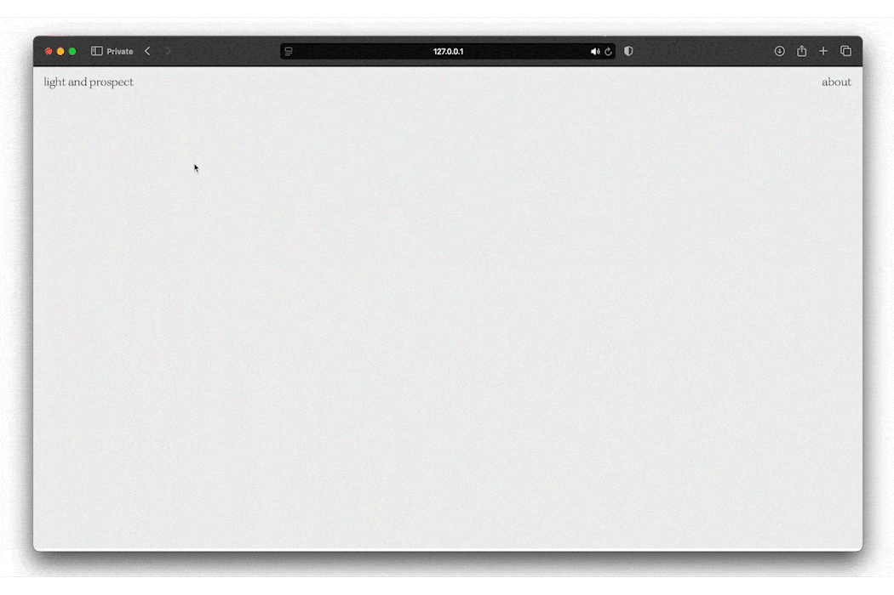
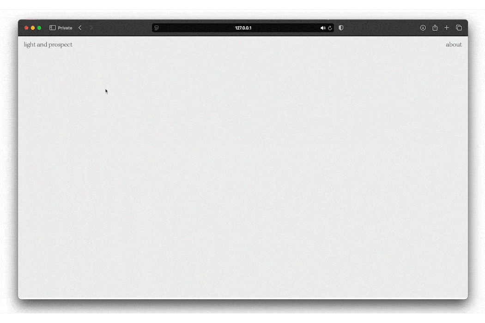

2024
A website and installation made in collaboration with Nadine Macapagal and Henie Cho that maps Prospect Terrace, a local park in Providence, through the feelings and experiences of it's visitors.
The site generates vignettes at a rate based on the visitor data collected from Google Maps.